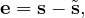
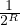
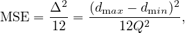
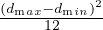
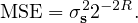
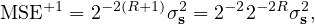
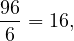
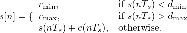

Figure 1: An example quantization procedure, applied to an analog signal.
Quantization is the process of mapping a continuous range of values into a finite
range of discrete values. A quantizer, usually denoted by Q, is a system
that:
In the analog case (see the Figure 1), a PAM signals(nT) (i.e. a sequence
of analog samples where s is an (analog) signal, n ∈ ℤ and T is the
sampling period) is transformed into a PCM signals = s[n = 0,1,] =.
Therefore, analog quantization is the process of mapping a continuous
range of values (not necessarily countable) into a finite range of discrete
values (necessarily countable) [?].
Notice that, in general, analog signals are 1-dimensional, and that analog
quantization is irreversible.
In the digital case, s is already a PCM signal (a sequence of integers of
finite precision), the output of a quantizer is a sequence of quantization
indexes k, and the inverse system, called a dequantizer or inverse quantizer
(denoted by Q−1), can only recovers an approximated version of s that it
will be denoted by s.
If we define the cardinality operator |⋅| applied to a digital signal as the
number of different values that such signal can take, i.e., the size of the signal
alphabet, it ususally holds that
(1)
As a consequence of this property, the values that k, individually, can take will
require less bits to be represented than the values that the original signal s
can.
Finally, note that Q−1 is only a formal notation and does not correspond to the
reciprocal function of Q since quantization is noninvertible [1] (Quantization is
not linear transform).
2 Quantization error
Quantization is a lossy process that usually generates a distortion between s and s.
The quantization error in unpredectible (for this reason is also called quantization
noise), and therefore, we cannot recover s.
We define the quantization error

(2)
an the distortion is generally measured as the Mean Squared Error determined
by
Q should be designed to minimize the MSE, and this depends on how the
mapping between the input signal s and the quantized signal s has been
performed.
Q is defined by a finite set of decision boundaries {di;i ∈ ℤ} that describe a set or
cells1
in the signal domain, and a finite set of representation values {ri;i ∈ ℤ} (see
Figure ??), both with the same cardinality (because there is one representation level
per cell). The set r is called the codebook and to their elements ricodewords.
Given a finite number K of cells, to minimize the MSE, d and r are selected
depending on the characteristics of s. In general, we need to consider the statistical
distribution of the samples (or vectors of samples, depending on the way we process
the input) in s.
Notice that K has an impact on the output bit-rate of the quantizer and
therefore, we could be interested in minimizing the RD (Rate Distortion) tradeoff
instead of simply the MSE. However, such problem in general is addressed by using
an entropy codec at the output of Q.
4 Scalar quantization
Scalar quantizers map each source sample independently from the other samples
and therefore, a quantization index ki is produced for each input sample
si[?].
5 Vector quantization
In vector quantization, several source samples are quantized simultaneously and a
single index is associated to a vector of source samples. Vector quantization allows to
account for the correlation between source samples directly at the quantizer, which
improves its efficiency [1].
6 Uniform quantization
In uniform quantizers, the size of the cells is constant. For example, in a scalar
quantizer, the quantization step size is constant and independent of the input
signal.
Uniform quantizers are used in most A/D (analogic/digital) converters, where it
is expected the generation of uniformely distributed sequences of samples. In the case
of scalar uniform digital quantizers, it is common to have ri= i and the input
intervals are of the form (di−1,di] = (i − 1∕2,i + 1∕2].
In the case of analog scalar uniform quantizer, if R is the number of bits
of the quantizer per sample (for example, in the quantizer of the Fig. 1,
R = ⌈log2(5)⌉ = 3-bits and (Q = 8)), Δ decreases as . Considering Eq. ?? and
Eq. ??, we have that

(4)
where dmax and dmin are the maximum and minimum decision boundary,
respectively. Considering now that σs2=  for uniform input PDF
(Probability Density Function), we obtain that

(5)
Now, if we add a bit to R, R+1= R + 1, then

and
This result is interesting because in a PCM system, the quality of the signal is
incremented 6 dB with each bit. Notice that in HiFi, the SNR must be at least of 96
dB, and

the number of bits per sample used in the Audio CDs.
7 Non-uniform quantization
Depending on how the quantizer has been designed, it can be necesary to define the
so called low and high overload regions, respectively, that in the case of analog
quantization ban be described as

(6)
On other occasions, and depending on the PDF of s, the cells must be of different
size to minimize the MSE. When all the cells do not have the same size we have
designed a non-uniform quantizer.
 ] =.
Therefore, analog quantization is the process of mapping a continuous
range of values (not necessarily countable) into a finite range of discrete
values (necessarily countable) [?].
] =.
Therefore, analog quantization is the process of mapping a continuous
range of values (not necessarily countable) into a finite range of discrete
values (necessarily countable) [?].